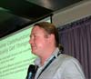
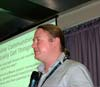

Сегодня мы познакомимся с тремя людьми, которые помогли всемирной сети распространиться по нашей планете и прийти к тому состоянию, в котором мы видим ее сейчас.
Читая этот топ, вы познакомитесь с несколькими наиболее влиятельными людьми, создавшими и развившими идеи и технологии, которые сегодня являются ведущими в глобальной паутине. Кроме этих троих замечательных людей многие их друзья и коллеги принимали учасие в этой работе. Если рассказывать обо всех, вам пришлось бы заниматься этим очень долго.

 
